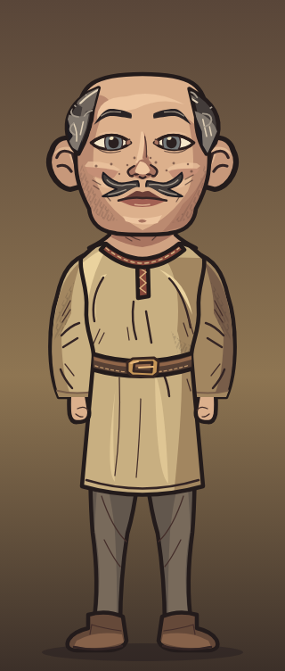

<!doctype html><html lang="ru"><meta charset="utf-8"><meta name="viewport" content="width=device-width,initial-scale=1"><title>Высота бровей</title><style>body{font:16px system-ui;background:#25201b;color:#eee2cd;margin:0 auto;max-width:1280px;padding:1rem}
    a{color:#f4ca91}h1,h2{font:700 1.7rem Georgia,serif}nav ul{columns:3}.grid{display:grid;gap:1rem;
    grid-template-columns:repeat(auto-fit,minmax(230px,1fr))}article{min-width:0;border:1px solid #655343;
    background:#312821;padding:.6rem;border-radius:5px}a img{vertical-align:middle}img{max-width:100%;height:auto}
    .character{display:block;max-height:460px;width:auto;margin:auto}.card{width:32px;height:32px}
    .detail{display:block;width:100%;margin:.35rem 0}.compare{display:flex;align-items:flex-start;gap:.5rem}
    .compare a{flex:1;min-width:0}small{color:#dccab0}code{overflow-wrap:anywhere}@media(max-width:730px){nav ul{columns:1}}</style><main><nav><a href="index.html">Все разделы</a></nav><h1>Высота бровей</h1><div class="grid"><article id="appearance__brow_height__medium"><h3>Средняя</h3><code>medium</code><a href="images/1e88519b02c61393922258fb0b42dc0a3bed86375e867b47695ec56d0db05fcb.png"></a><p><a href="images/e0c1c62af82c178216e53ce520dce9149ae88ea1a4fffe0ace867104bded9032.png"></a> <small>32 × 32</small></p></article>
<article id="appearance__brow_height__low"><h3>Низкая</h3><code>low</code><a href="images/520b509f6206ee832d00d9a7e87ac8e0fa89d2072f6254bec5403aadeaafb572.png"></a><p><a href="images/7bdd09f25be0233c8428404d981c2163ff19ab6e39347a0caa1ade7c02e6a1c5.png"></a> <small>32 × 32</small></p></article>
<article id="appearance__brow_height__high"><h3>Высокая</h3><code>high</code><a href="images/85ecbfd608388496c21d2f8e91c162c2b99bee8e418a67db6661fd39a988171c.png"></a><p><a href="images/5267b1ace42ea94e4569f4a087c85e83fc71e8e124df365b21a7d60fb960630a.png"></a> <small>32 × 32</small></p></article></div></main></html>
